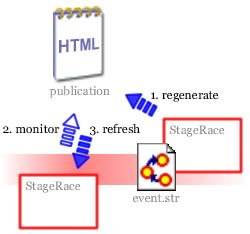

With monitoring the publication view can automatically reload when the (publication) document has changed from the outside, thus not by the StageRace instance that you are working from.
You can switch monitoring on and off through in the menu. Files that belong to the currently opened event file will subsequently be monitored for outside changes.
Through in the menu you can also add other files (HTML files, text files) for monitoring than just those that are part of a StageRace event. They'll be opened in a new window within StageRace.
Monitoring is particularly suited for a work station running StageRace that is only viewing things, e.g. for an on-site presenter or journalists.

The illustration above gives an overview of what could happen: one StageRace instance regenerates a document, the second instance is monitoring the document and refreshes it after regeneration by the first.
The involved files can be stored in some shared network folder, on which the first StageRace instance may have full access rights and the second one just has read access rights.
For performance reasons monitoring is not working on legacy Windows versions 9x and Me.